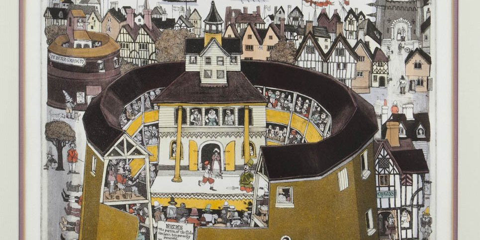

citation
Globe Theater
The first public production of the play was believed to be in 1611 at Shakespeare's Globe Theater. The Globe Theater was a large theater that housed Shakespeare's plays since 1599. The theater has remained a successful business from its creation to the present day.